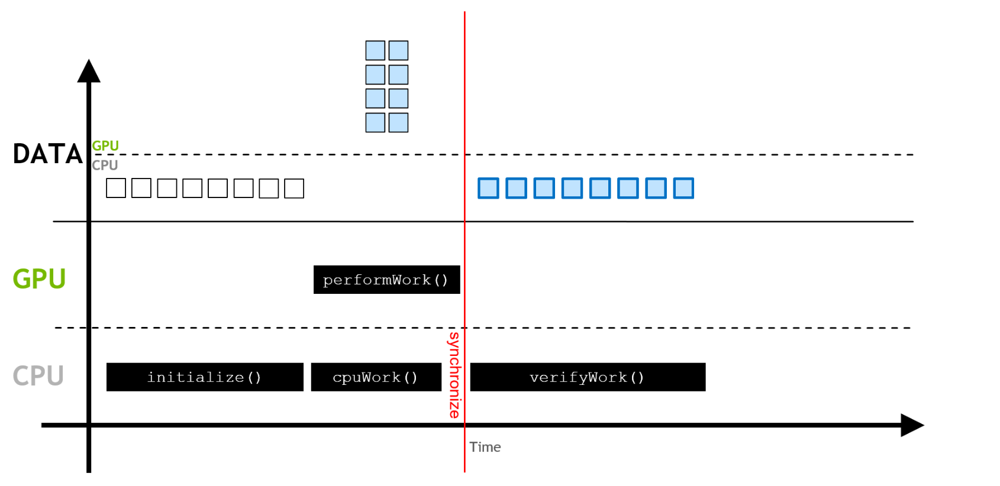
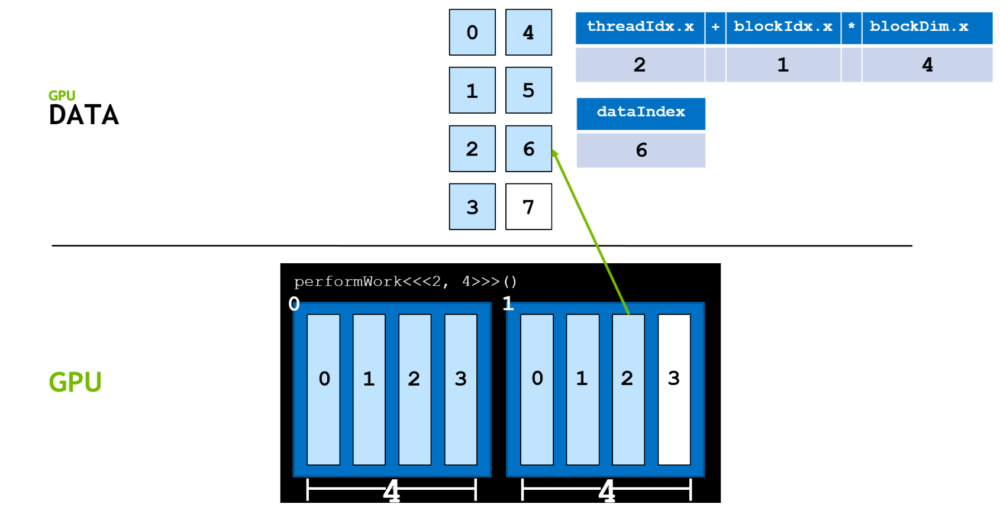
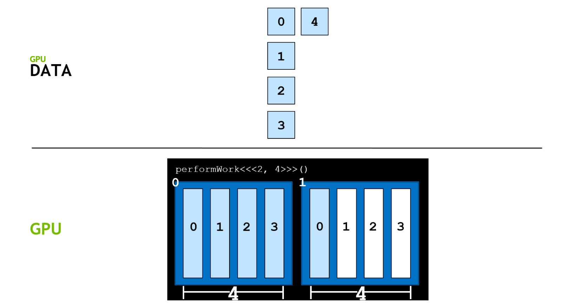
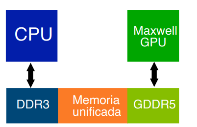
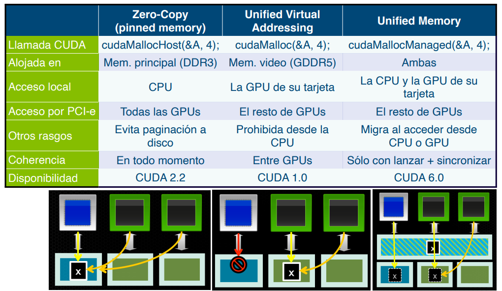
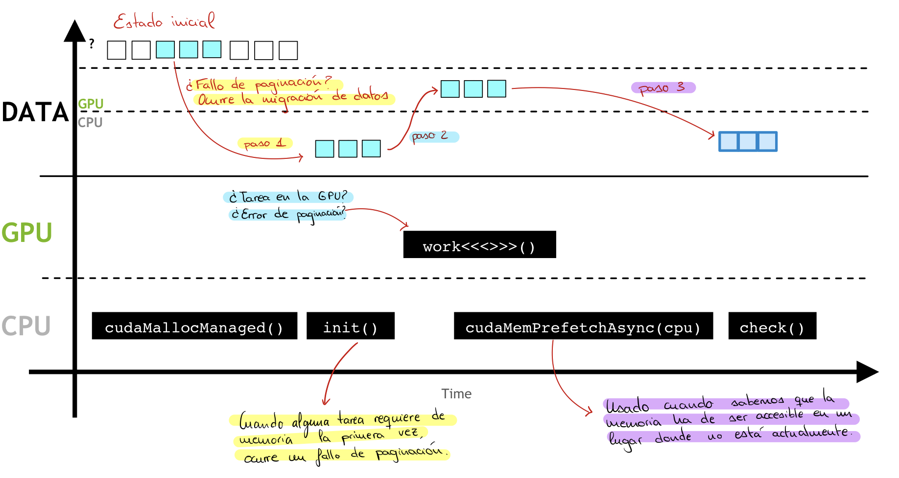
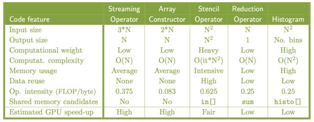
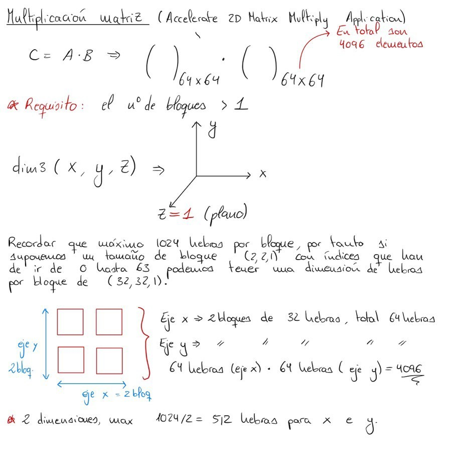

CUDA en C
Warning
El contenido de esta página no ha sido revisado ni corregido, por lo que puede estar incompleto, contener errores o presentar información desactualizada. Además, es posible que esté desordenado, carezca de una estructura clara o incluya notas copiadas directamente.
Este capítulo detalla la programación de kernels CUDA en C, desde la identificación de hilos y bloques y la gestión de la memoria del dispositivo hasta el manejo de errores, los patrones habituales de paralelización y el perfilado de las aplicaciones resultantes. Presupone los conceptos de arquitectura descritos en el capítulo de fundamentos.
Bibliografía¶
- NVIDIA y Universidad de Málaga. (s.f.). Deep Learning Institute - UMA. http://nvidiadli.uma.es/index.php/es/certificaciones-nvidia
Conceptos básicos¶
En CUDA, una función que se ejecuta de forma paralela en la GPU se denomina kernel. Para conocer la GPU disponible y sus características se puede utilizar el siguiente comando en la terminal:
Requisitos previos
Es necesario disponer de una tarjeta gráfica de NVIDIA con los drivers del sistema operativo instalados para poder utilizar estos comandos y programar con CUDA. En caso contrario, es posible acceder a plataformas de terceros que proporcionan este tipo de recursos, aunque pueden suponer un coste económico dependiendo del hardware seleccionado.
También es posible consultar las especificaciones de la GPU de forma programática desde el propio código CUDA:
Durante la ejecución de un programa CUDA, la CPU y la GPU trabajan de forma simultánea, de modo que resulta necesario sincronizar ambos componentes en los puntos en los que uno depende del resultado del otro.

Sentencias condicionales dentro de un kernel
Conviene minimizar las bifurcaciones dentro de un kernel, y sobre todo evitar
aquellas cuya condición dependa de threadIdx.x de forma que divida el warp.
Cuando eso ocurre el warp diverge, según se describe en el capítulo de
fundamentos, y el tiempo de ejecución se aproxima a
la suma de las dos ramas.
La programación en CUDA se realiza utilizando C o C++, y los archivos fuente emplean la
extensión .cu. La compilación del código se lleva a cabo con el siguiente comando:
En este comando, -arch=sm_70 especifica la arquitectura objetivo de la compilación,
-o indica el nombre del ejecutable generado y -run ejecuta el binario resultante una
vez finalizada la compilación.
Prefijo ! en Jupyter
Para compilar desde un notebook de Jupyter se debe añadir el prefijo ! al inicio
del comando, es decir, !nvcc -arch=sm_70 -o resultado_nombre programa.cu -run.
Dicho símbolo indica al notebook que la instrucción debe ejecutarse en la shell
del sistema en lugar de interpretarse como código Python.
Código básico en CUDA
El programa invoca una función que se ejecuta en la CPU y un kernel que se ejecuta en la GPU.
La palabra clave __global__ indica que la función se ejecuta en la GPU y puede ser
invocada desde la CPU. El código ejecutado en la CPU se denomina host y el ejecutado
en la GPU, device.
Las funciones __global__ deben tener el tipo de retorno void. La invocación de un
kernel utiliza la configuración de ejecución, que adopta la forma
nombre_funcion<<<x, y>>>, donde x es el número de bloques e y el número de hilos
por bloque. El número total de hilos se obtiene multiplicando ambos valores, de modo que
con 2 bloques y 4 hilos por bloque se obtienen 8 hilos. Los valores admisibles dependen
de las capacidades del hardware de la GPU.
El código del kernel se ejecuta en cada hilo de cada bloque configurado. Un kernel
con un solo bloque utilizará únicamente un multiprocesador de la GPU, por lo que
desperdiciará la mayor parte del dispositivo. La función cudaDeviceSynchronize()
bloquea la CPU hasta que la GPU completa el trabajo pendiente, y actúa así como
herramienta de sincronización entre ambos.
Control del orden de ejecución entre CPU y GPU
La posición de cudaDeviceSynchronize() determina el orden en que se completan las
operaciones. En el siguiente ejemplo la GPU ejecuta primero y la CPU después.
CUDA permite acelerar los bucles cuyas iteraciones son independientes entre sí. Sirva
como punto de partida el incremento de un valor b sobre los N elementos de un
vector, resuelto en la CPU:
Este bucle es adecuado para la paralelización porque cada índice se calcula de forma independiente y el resultado no depende del orden en que se procesen los elementos. Esa propiedad es lo que permite repartirlo entre hilos, ya que CUDA no garantiza ningún orden de ejecución entre los distintos warps ni entre los distintos bloques de la malla.
Identificación de hilos, bloques y mallas¶
CUDA proporciona variables integradas que describen los hilos, los bloques y la malla (grid):
| Variable | Descripción |
|---|---|
gridDim.x |
Número total de bloques en la malla. |
blockIdx.x |
Índice del bloque actual dentro de la malla. |
blockDim.x |
Número de hilos en un bloque dentro del kernel. |
threadIdx.x |
Índice de un hilo dentro de un bloque en el kernel. |
Los bloques de un mismo kernel no pueden comunicarse entre sí durante su ejecución, ya
que se planifican en cualquier orden y de forma independiente. El kernel debe realizar
el trabajo de una sola iteración del bucle, de modo que la configuración de ejecución ha
de ajustarse al número de iteraciones mediante una elección adecuada del número de
bloques y del número de hilos por bloque. A continuación se presenta el código
paralelizado del bucle anterior. La reserva se realiza con cudaMallocManaged(), que
devuelve un puntero accesible tanto desde la CPU como desde la GPU y cuyo funcionamiento
se detalla en la sección de asignación de memoria:
Cada hilo realiza una iteración del bucle. La fórmula que asocia cada hilo a un índice del bucle es la siguiente:
En esta expresión, \(i_{x}\) representa el índice global del hilo dentro de la malla,
blockIdx.x identifica el bloque al que pertenece el hilo, blockDim.x indica cuántos
hilos contiene cada bloque y threadIdx.x señala la posición del hilo dentro de su
bloque.

Elección del tamaño de bloque
El tamaño de bloque debe ser múltiplo de 32, que es el número de hilos de un warp. Un bloque de 48 hilos, por ejemplo, ocuparía dos warps y dejaría 16 hilos inactivos en el segundo, con lo que se desperdicia una cuarta parte de la capacidad de emisión. Los valores habituales están entre 128 y 512 hilos por bloque.
Cuando el número de hilos lanzados supera el número de tareas, el kernel debe comprobar que el índice global \(i_{x}\) es menor que el número total de datos antes de acceder a la memoria. Omitir esa guarda provoca escrituras fuera de los límites del array.

Asignación de memoria¶
La asignación y liberación de memoria se realiza de forma diferente en la CPU y en la
GPU. En la CPU se utilizan las funciones malloc() y free():
En la GPU se emplean cudaMallocManaged() y cudaFree(), que reservan y liberan
memoria unificada accesible desde la CPU y desde la GPU:
Gracias a los avances en el hardware de interconexión, la tasa de transferencia entre la CPU y la GPU ha mejorado de forma sustancial. Las versiones recientes de CUDA permiten además el uso de memoria unificada, que simplifica el intercambio de datos entre ambos componentes.

La memoria unificada ofrece varias ventajas. Proporciona un único puntero a los datos,
accesible tanto desde la CPU como desde la GPU, lo que elimina la necesidad de invocar
cudaMemcpy() de forma explícita, facilita la portabilidad del código y garantiza la
coherencia entre ambas vistas de los datos. El sistema migra las páginas bajo demanda, y
cuando ese comportamiento automático no resulta suficiente es posible guiarlo de forma
manual con cudaMemPrefetchAsync(), que anticipa la migración, y con cudaMemAdvise(),
que no mueve datos y se limita a informar al runtime del patrón de acceso previsto.
La siguiente imagen recoge los tipos de memoria que expone la plataforma.

Consideraciones de la memoria unificada
En sistemas con varias GPU, la capacidad efectiva queda limitada por la memoria de la GPU más pequeña que participe en el acceso. La memoria que la CPU haya modificado debe migrar de nuevo al dispositivo antes de que un kernel la utilice, y esa migración tiene un coste que conviene tener presente.
A partir de la arquitectura Pascal el comportamiento es más flexible que en las
generaciones anteriores. Es posible reservar más memoria unificada que la disponible
en el dispositivo, ya que el runtime la pagina bajo demanda, y la CPU puede
acceder de forma concurrente a regiones que la GPU no esté utilizando siempre que la
propiedad concurrentManagedAccess esté activa. En arquitecturas anteriores a
Pascal ninguna de las dos cosas es posible: la GPU adquiere acceso exclusivo a toda
la memoria unificada mientras ejecuta un kernel, de modo que cualquier acceso de
la CPU exige un cudaDeviceSynchronize() previo.

Ejemplos de uso de memoria unificada¶
Los dos ejemplos siguientes ilustran el problema anterior sobre una arquitectura sin acceso concurrente. En ambos casos el kernel se lanza de forma asíncrona, por lo que la CPU continúa ejecutando código mientras la GPU trabaja.
Uso incorrecto de la memoria unificada
La CPU escribe en una variable gestionada sin haber esperado a que la GPU termine, lo que produce un acceso concurrente no sincronizado.
Uso correcto de la memoria unificada
La versión correcta sincroniza antes de que la CPU acceda a la variable.
Kernels con gran volumen de datos¶
Cuando la cantidad de datos excede el número de hilos disponibles, es necesario dividir el trabajo en porciones que se ajusten al número de hilos lanzados. Tras procesar una porción, cada hilo avanza a la siguiente aplicando un desplazamiento igual al número total de hilos de la malla, esto es, \(\text{blockDim.x} \cdot \text{gridDim.x}\). Este patrón se conoce como grid stride loop:
La condición i < N del bucle cumple aquí la misma función que la guarda de límites del
apartado anterior, de modo que el patrón es correcto para cualquier combinación de
tamaño de malla y volumen de datos.
Manejo de errores¶
Las funciones de CUDA devuelven un valor de tipo cudaError_t que indica si se ha
producido un error. A continuación se muestra cómo gestionarlo al reservar memoria:
Doble indirección al reservar memoria
El parámetro debe declararse como int **a y no como int *a. Las funciones de
reserva de CUDA escriben la dirección obtenida en la posición que reciben, de modo
que si el puntero se pasa por valor la reserva se registra en la copia local y se
pierde al retornar de la función, además de provocar una fuga de memoria en el
dispositivo.
El lanzamiento de un kernel requiere un tratamiento distinto, porque no devuelve un
código de error. Los errores de configuración se recuperan con cudaGetLastError()
inmediatamente después del lanzamiento, mientras que los errores producidos durante la
ejecución del kernel solo afloran en la siguiente llamada de sincronización:
cudaGetLastError() frente a cudaPeekAtLastError()
Ambas funciones consultan el último error registrado por el runtime, con una
diferencia relevante: cudaGetLastError() restablece el estado de error a
cudaSuccess, mientras que cudaPeekAtLastError() lo conserva. Conviene emplear la
primera cuando el error ya se ha tratado y la segunda cuando se desea consultarlo
sin consumirlo.
Macro auxiliar para verificar errores
Envolver cada llamada a la API con una comprobación centralizada evita repetir el mismo bloque condicional. Se implementa como macro y no como función para poder informar del archivo y de la línea donde se produjo el fallo.
La comprobación no debe apoyarse en assert(), ya que las compilaciones que definen
NDEBUG la eliminan por completo y el programa continuaría con datos inválidos. El
uso de exit(EXIT_FAILURE) garantiza que el fallo se manifieste en cualquier
configuración de compilación.
Patrones comunes de kernels¶

Antes de describir cada patrón conviene definir el concepto de bucle forall, que
designa un bucle for sin dependencias entre iteraciones, de modo que el resultado no
varía en función del orden de ejecución ni del índice de inicio. Sobre esta base se
construyen los patrones que siguen. Los ejemplos se presentan en su versión secuencial
para hacer visible la estructura de dependencias de cada uno.
Operadores streaming¶
Representan la forma más simple de un bucle forall. CUDA puede emplear tantos hilos como elementos haya, ya que cada uno se procesa de manera independiente, como ocurre al calcular la luminancia de una imagen a partir de sus tres canales de color:
Operadores sobre vectores¶
A diferencia del operador streaming, que realiza varias operaciones por cada elemento leído, el operador sobre vectores efectúa una sola. Su rendimiento queda por tanto limitado por el ancho de banda de la memoria global y no por la capacidad de cálculo. Cada iteración del bucle puede asignarse a un hilo distinto, lo que maximiza el paralelismo y la escalabilidad al no existir comunicación entre iteraciones:
Tamaño de los arrays declarados de forma estática
Los tres arrays del ejemplo se reservan de forma estática, por lo que su tamaño
total forma parte del ejecutable. Con \(N = 2^{20}\) ocupan 12 MiB, una cifra
manejable. Elevar N a \(2^{30}\) exigiría 12 GiB y el programa no llegaría a
arrancar, de modo que para volúmenes grandes la reserva debe ser dinámica.
Operadores patrón¶
Los operadores patrón (stencil operators) calculan cada elemento a partir de sus vecinos. Las iteraciones externas deben serializarse debido a las dependencias entre pasos temporales, pero el cálculo de cada elemento dentro de un mismo paso sí puede paralelizarse. La carga computacional depende del número de iteraciones:
El grado de paralelismo disponible en cada paso temporal está determinado por el tamaño de la matriz bidimensional, esto es, \(N^2\).
Operadores de reducción¶
Aunque el código presenta dependencias entre iteraciones, el paralelismo puede desplegarse mediante una estructura en árbol binario. El número de pasos necesarios es \(\lceil \log_2 N \rceil\), y en cada uno de ellos el grado de paralelismo se reduce a la mitad hasta llegar a un único hilo. Resulta fundamental emplear un patrón de acceso a memoria que aproveche la jerarquía del dispositivo:
Histogramas¶
Los histogramas constituyen un patrón en el que los bucles presentan dependencias en la escritura, ya que varios hilos pueden incrementar la misma posición del histograma. Las lecturas, en cambio, pueden realizarse en paralelo si se asignan a hilos distintos:
La versión paralela no puede utilizar el incremento habitual, porque dos hilos que
procesen píxeles del mismo nivel leerían el mismo valor y escribirían el mismo
resultado, con lo que una de las dos cuentas se perdería. Para evitarlo, CUDA
proporciona operaciones atómicas que resuelven la lectura, la modificación y la
escritura como una unidad indivisible. La forma adecuada de incrementar el contador es
atomicAdd(&histo[image[i][j]], 1), que recibe la dirección de la posición a modificar
y el valor que se le suma.
En conjunto, el operador streaming es el que mejor se adapta a la GPU, el operador sobre vectores queda limitado por el ancho de banda de la memoria global, el operador patrón es el que más partido saca de la memoria compartida, el operador de reducción requiere una mayor intervención del programador y el histograma es el más difícil de implementar con eficiencia.
Multiplicación de matrices 2D¶
Un caso de uso habitual en CUDA es la multiplicación de matrices, donde se aprovecha la malla bidimensional de hilos para asignar cada elemento de la matriz resultado a un hilo independiente.

La clave consiste en calcular los índices de fila y de columna a partir de las coordenadas del hilo en la malla. Cada hilo calcula un único elemento del resultado acumulando el producto escalar de la fila correspondiente de la primera matriz con la columna correspondiente de la segunda:
Distribución de hilos en bloques multidimensionales
Al utilizar bloques multidimensionales, el producto de todas las dimensiones no debe
superar el máximo de hilos por bloque, que habitualmente es 1024. Por ejemplo,
dim3(32, 32, 1) es válido porque define 1024 hilos, mientras que dim3(256, 3, 2)
no lo es porque define 1536.
Dimensionado de una malla para un dominio rectangular
El reparto correcto de hilos y bloques sobre un dominio que no es cuadrado requiere un cálculo previo. Sea una matriz de \(100 \times 200\) elementos, con 100 filas en la dimensión \(j\) y 200 columnas en la dimensión \(i\), lo que da un total de 20 000 elementos que cubrir.
El primer impulso consiste en asignar un bloque único con tantos hilos como haga falta. Puesto que se requieren al menos 100 hilos en una dimensión y 200 en la otra, y conviene que ambos sean múltiplos del tamaño de warp, que es 32, los valores inmediatamente superiores son \(32 \cdot 4 = 128\) y \(32 \cdot 7 = 224\). Sin embargo, esa configuración resulta inválida:
El producto excede con mucho el máximo de 1024 hilos por bloque. La solución consiste en trasladar el exceso a la malla, fijando bloques de \(32 \times 32\) hilos, que agotan exactamente el límite, y repartiendo el resto entre los bloques de la malla:
La configuración resultante emplea una malla de \(4 \times 7 \times 1\) bloques con \(32 \times 32 \times 1\) hilos por bloque, lo que cubre el dominio completo respetando tanto el límite de hilos por bloque como la alineación con el tamaño de warp.
Precarga de memoria¶
La función cudaMemPrefetchAsync() permite migrar datos a la memoria de la GPU, o de
vuelta a la CPU, de forma anticipada. Con ello se reducen los fallos de página (page
faults) que provocan migraciones bajo demanda durante la ejecución, y mejora el
rendimiento del kernel:
El sufijo Async del nombre indica que la función encola la migración y retorna de
inmediato, sin esperar a que esta se complete. Por ello la sincronización posterior es
imprescindible antes de que el host lea los resultados.
Al utilizar precarga de memoria se obtienen menos transferencias, aunque de mayor volumen cada una, lo que se traduce en una reducción apreciable del tiempo de ejecución del kernel.
Perfilado de aplicaciones¶
NVIDIA recomienda abordar la optimización mediante el ciclo APOD (Assess, Parallelize, Optimize, Deploy), que aplica las mejoras de forma incremental: evaluar dónde está el cuello de botella, paralelizar esa parte, optimizar la implementación resultante y desplegarla antes de abordar el siguiente punto caliente. El perfilado es la herramienta que sustenta la primera y la tercera fase.
El perfilador nsys, incluido en NVIDIA Nsight Systems, permite analizar el rendimiento
de las aplicaciones CUDA. Se ejecuta con el siguiente comando:
Entre la información que proporciona se encuentra el tiempo medio de ejecución del kernel, lo que resulta útil para comparar distintas configuraciones de bloques e hilos y determinar la distribución más adecuada para un problema concreto. Devuelve además la actividad de la memoria unificada y genera un informe que puede abrirse en la interfaz gráfica de Nsight Systems para su inspección detallada.
El uso de nsys responde a un proceso iterativo, donde cada medición orienta la
siguiente modificación del código:
flowchart LR
A["Código"] --> B["Compilar (nvcc)"]
B --> C["Perfilar (nsys)"]
C -->|Cambios en el código| AOptimización de la configuración de ejecución
Para un volumen de datos de \(2^{25}\) elementos y un máximo de 1024 hilos por bloque,
se necesitan \(2^{25} / 1024 = 32768\) bloques para cubrir todos los elementos.
Consultar el número de multiprocesadores disponibles con cudaDeviceProp y
contrastar varias configuraciones con nsys permite encontrar la combinación óptima
de forma empírica. El rendimiento mejora cuando el número de bloques es múltiplo del
número de multiprocesadores de la GPU, puesto que el reparto resulta equilibrado y
ningún multiprocesador queda inactivo en la última tanda.
El capítulo de CUDA en Python aborda los mismos conceptos con Numba y CuPy, donde muchas de estas decisiones se expresan de forma más concisa sin dejar de estar presentes.